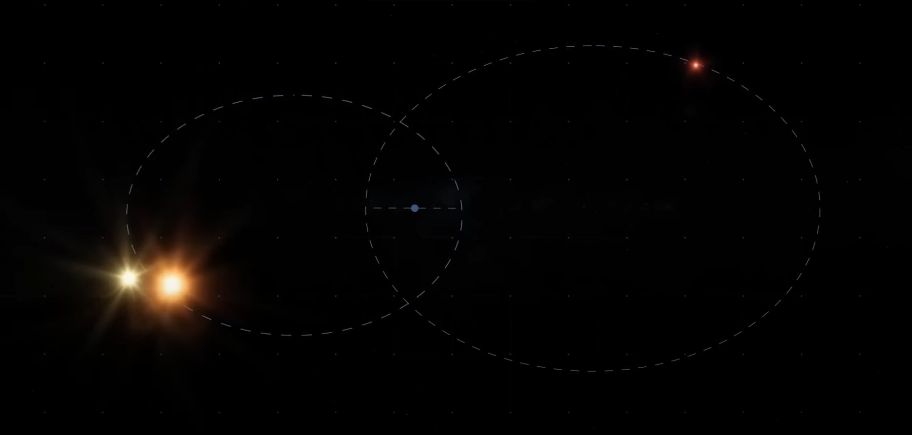
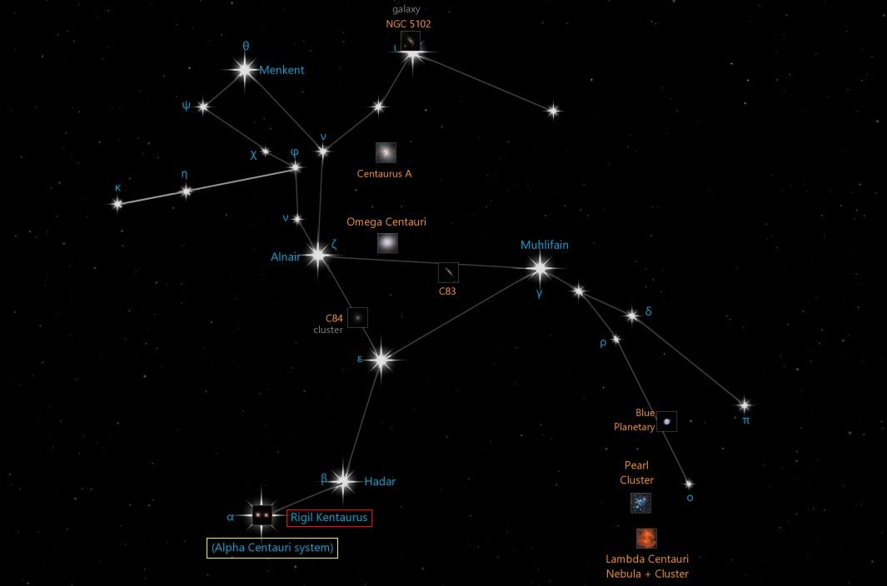
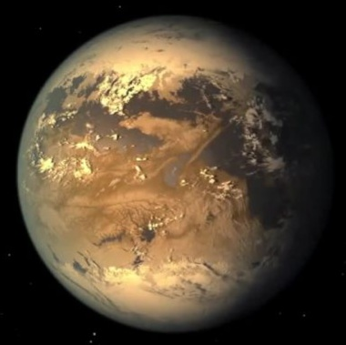
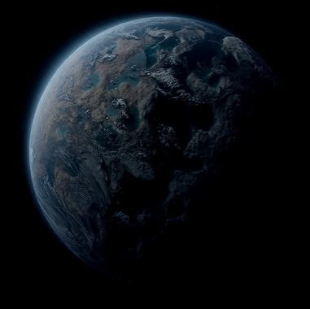
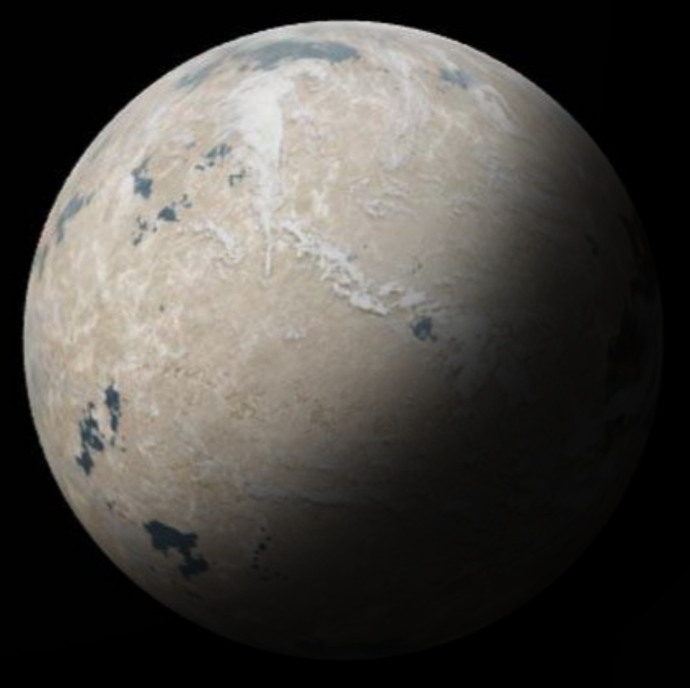

Alpha Centauri is a triple star system located 4.37 light-years away from Earth, making it the closest star system to our solar system.
Alpha Centauri Stars
Alpha Centauri is a triple star system. The two main stars, A and B, orbit each other, while Proxima Centauri orbits them.

Alpha Centauri A
is a main-sequence star that is slightly larger and more massive than our Sun. Along with its companion star, it orbits around a common center of mass every 80 years.
Alpha Centauri B
is a main-sequence star that is slightly smaller and cooler than our Sun. Along with its companion star, it orbits around a common center of mass every 80 years.
Proxima Centauri
is a red dwarf star that is 1/8th the mass of our Sun. It is in a wide orbit around the two other brighter stars, taking approximately 550,000 years to complete one orbit.
Alpha Centauri in the night sky
Alpha Centauri is located in the constellation Centaurus, which is visible in both hemispheres. The best time to observe it is during the summer months, when it is at its highest point in the sky.

Alpha Centauri Planets
Alpha centauri system has at least three planets all orbiting Proxima Centauri. It's believed that there more planets undiscovered in the system.

Proxima Centauri b
is discovered in August 2016. Its located within the habitable zone of its star and receives about 65% of Earth's irradiation making one of the most promising planets to host life.

Proxima Centauri c
is a controversial planet discovered in January 2020. It could be a super-Earth or a mini-Neptune. The planet may have a ring system with a radius of around 5Rj.

Proxima Centauri d
is discovered in February 2022.It is a sub-Earth at least twice the mass of Mars. It receives about 190% of Earth's irradiation and orbits too close to its star to be habitable.
Distance to Alpha Centauri
Although this system is the closest to ours, it takes at least 6000 years to get there with the current technology.